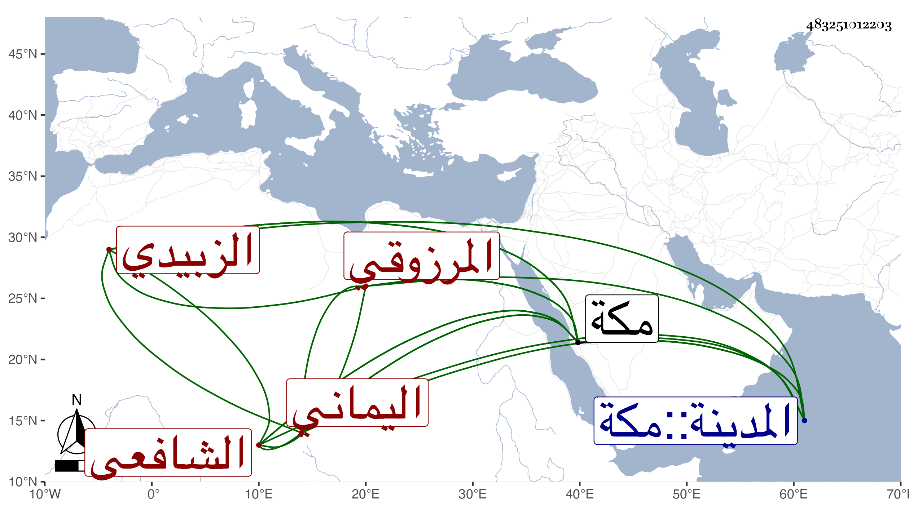

0902Sakhawi.DawLamic.ITO20230111-ara1.EIS1600.483251012203
Biography ID: 483251012203
1018
يحيى بن محمد بن صديق بن يحيى المرزوقي اليماني الزبيدي الشافعي ممن جاور بالحرمين واشتغل فيهما بالفقه والنحو ، ولقيني بمكة في سنة ثلاث وتسعين فكتب المقاصد الحسنة من تأليفي وقرأه ، وكذا قرأ علي التبيان للنووي وسمع الكثير من الكتب الستة وتصانيفي في ختومها ونحو الثلث الأول من الشفا مع ختمه ومؤلفي فيه وبعض الشمائل والرياض ، وغير ذلك مع سماعه للمسلسل من لفظي ، وكتبت له إجازة في كراسة وصفته فيها بالشيخ الفاضل الأوحد الكامل المقبل على الخير علما وعملا والمشتمل على المحاسن اللائقة بالنبلاء أعاد الله علي من بركاته وزاد في معلوماته وحسناته ونفعه ونفع به ووصل أسباب الخيرات بسببه ويسر له الطريق والرفيق ونشر عليه سحائب جوده وكرمه ليرتوي منها في الإرشاد والتحقيق ممن قطن بالحرمين الشريفين وفطن من العلوم لما تقر به العين من فقه وعربية وغيرهما مما تنبه به للفضائل الزكية مع مصاحبته للأدب ومجانبته لكل من يبعده عن كل ما إليه انتدب وتقنعه باليسير وترفعه عما يشين ويضير فكان بذلك منفردا عن جل أقرانه متوحدا بالتوجه لعرفانه وكنت ممن لازمني وبالاستفادة ساومني ، إلى آخر ما كتبت وسافر من مكة في العشر الأخير من ذي الحجة منها .
